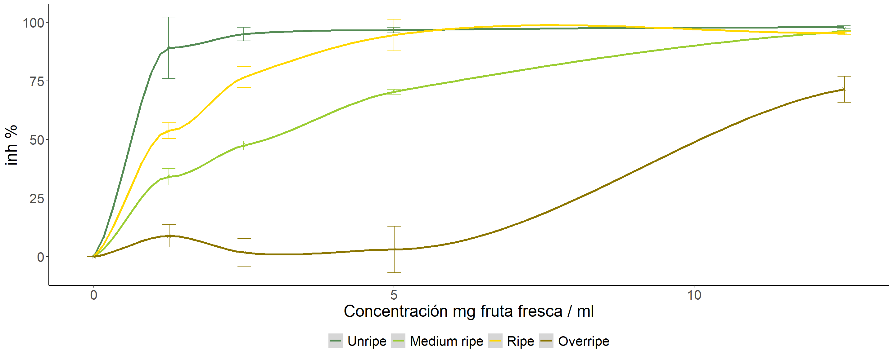

Actividad Antioxidante
Tabla descriptiva
| Trata | n | Mean | sd |
|---|---|---|---|
| I | 12 | 94.6600000 | 6.7123509 |
| MM | 12 | 61.9891667 | 24.9240521 |
| M | 12 | 80.0725000 | 17.7749206 |
| SM | 12 | 22.2944167 | 30.0379035 |
Boxplot de capacidad anti oxidante para distintos grados de madurez
Modelo
Supuestos del modelo
Anova
## Analysis of Deviance Table (Type II Wald chisquare tests)
##
## Response: In
## Chisq Df Pr(>Chisq)
## Trata 183.7191 3 < 0.000000000000000222 ***
## ---
## Signif. codes: 0 '***' 0.001 '**' 0.01 '*' 0.05 '.' 0.1 ' ' 1Comparaciones a posteriori
## $emmeans
## Trata emmean SE df lower.CL upper.CL
## I 0.946600000 0.100641779 3.86 0.662993594 1.230206406
## MM 0.619891667 0.100641779 3.86 0.336285261 0.903498072
## M 0.800725000 0.100641779 3.86 0.517118594 1.084331406
## SM 0.222944167 0.100641779 3.86 -0.060662239 0.506550572
##
## Degrees-of-freedom method: kenward-roger
## Confidence level used: 0.95
##
## $contrasts
## contrast estimate SE df t.ratio p.value
## I - MM 0.326708333 0.0565683503 41 5.775 <.0001
## I - M 0.145875000 0.0565683503 41 2.579 0.0628
## I - SM 0.723655833 0.0565683503 41 12.793 <.0001
## MM - M -0.180833333 0.0565683503 41 -3.197 0.0137
## MM - SM 0.396947500 0.0565683503 41 7.017 <.0001
## M - SM 0.577780833 0.0565683503 41 10.214 <.0001
##
## Degrees-of-freedom method: kenward-roger
## P value adjustment: tukey method for comparing a family of 4 estimates
Evolución de la Actividad anti oxidante en la maduración 